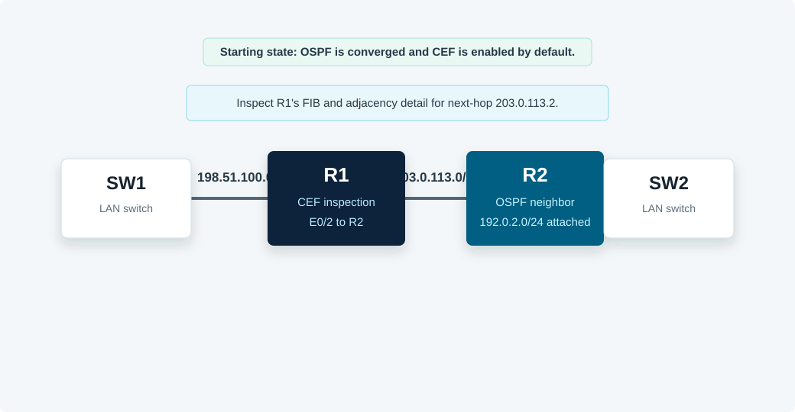

Overview
This lab inspects Cisco Express Forwarding on R1. The topology starts with OSPF already converged so R1 has a route to the R2-side LAN. You will compare the routing table, CEF forwarding information base, and CEF adjacency table.
All commands in this guide use the CML Ethernet interface names shown in the topology.
Topology
R1 reaches 192.0.2.0/24 through next hop 203.0.113.2 on Ethernet0/2. SW1 and SW2 keep the LAN-facing links up, matching the supplied lab's switch-router layout.

Task 1: Verify the Baseline
Confirm OSPF has installed a route on R1 toward the R2-side LAN and that R1 can resolve the next hop.
! R1
show ip interface brief
show ip route
show ip route 192.0.2.0
show ip ospf neighbor
ping 203.0.113.2
ping 192.0.2.1Task 2: Inspect the CEF FIB on R1
Use the CEF table to identify attached, receive, drop, and recursive or next-hop forwarding entries. Pay special attention to 192.0.2.0/24, 198.51.100.0/24, and 203.0.113.0/24.
! R1
show ip cef
show ip cef 192.0.2.0
show ip cef 192.0.2.1 detail
show ip cef 203.0.113.2 detailExpected result: R1 should forward 192.0.2.0/24 toward next hop 203.0.113.2 out Ethernet0/2. Directly connected prefixes should show attached or receive entries.
Task 3: Inspect the CEF Adjacency Table
The adjacency table stores Layer 2 rewrite information for directly connected next hops. Inspect the adjacency for R2 and interpret the encapsulation data.
! R1
show adjacency
show adjacency detail
show adjacency Ethernet0/2 detail
show arp 203.0.113.2Expected result: R1 should have an IP adjacency for 203.0.113.2 on Ethernet0/2, with an encapsulation string derived from the resolved Layer 2 address.
Task 4: Correlate RIB, FIB, and Adjacency
Explain the forwarding chain for traffic from R1 toward 192.0.2.1. The RIB selects the route, CEF programs the FIB entry, and the adjacency table provides the rewrite for the next hop.
! R1
show ip route 192.0.2.0
show ip cef 192.0.2.1 detail
show adjacency Ethernet0/2 detail
traceroute 192.0.2.1Depth check: CEF is not just a copy of the routing table. The FIB is optimized for forwarding decisions, while the adjacency table contains the resolved next-hop rewrite information needed to transmit the packet.